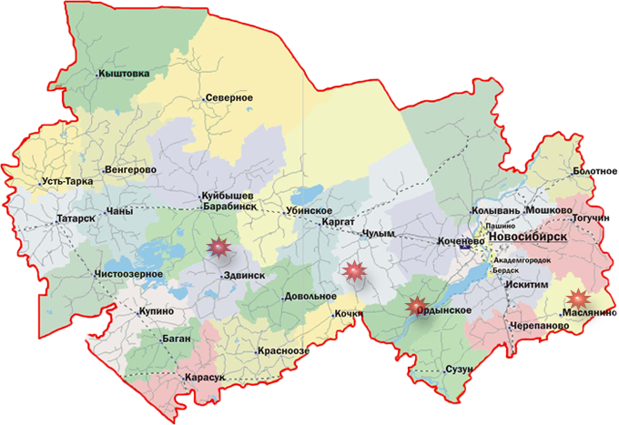

Как пользоваться картой?
Наведите курсор мыши на любую из звездочек, чтобы увидеть название достопримечательности. Нажмите на звездочку, чтобы перейти к просмотру большей информации об объекте.

© Алиса Попова, 2013